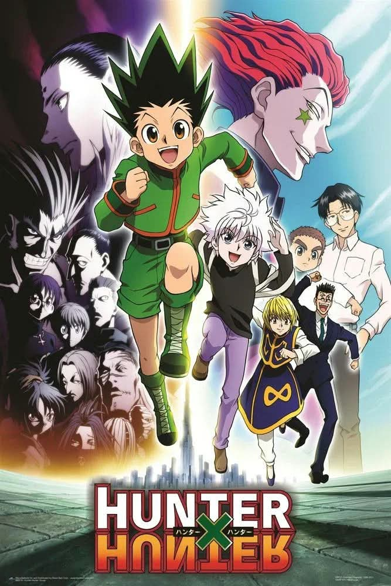

UNOFFICIAL FAN STORY · CHAPTER 01
Hunter x Hunter
A determined young seeker follows a trail of clues toward a legendary test, discovering that courage is as much about kindness as skill.
Chapter One: A New Beginning
The harbor was still dark when a paper crane landed on Ren’s shoulder. Inside its folded wings was a map to the Hunter’s Trial.
At the pier, Ren met two strangers: a careful strategist with a battered notebook and a cheerful runner who never seemed to tire. None of them knew what waited beyond the fog, but each had a reason to keep moving.
Their first challenge was simple: cross the old bridge before sunrise. The bridge shifted with every gust, and panic spread quickly. Ren stopped halfway and helped a frightened competitor retrieve a dropped bag. That small choice cost him time—but earned him two new allies.
When the sun rose, the gate opened. Ren understood the first lesson of the trial: a true hunter notices more than the finish line.
This is an unofficial, original fan-made story and is not affiliated with the official creators or publishers.